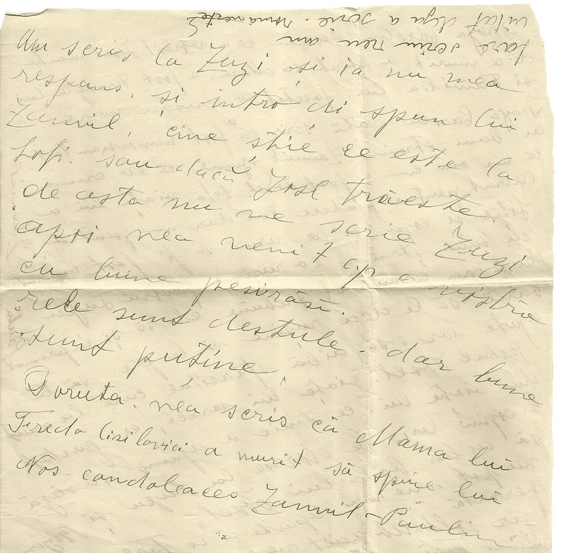
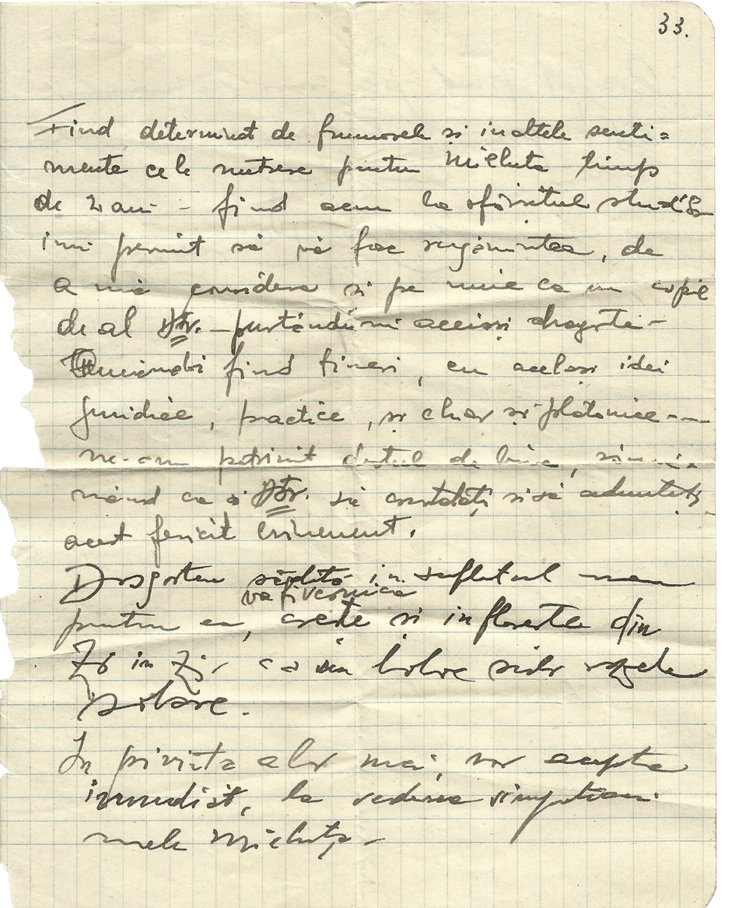
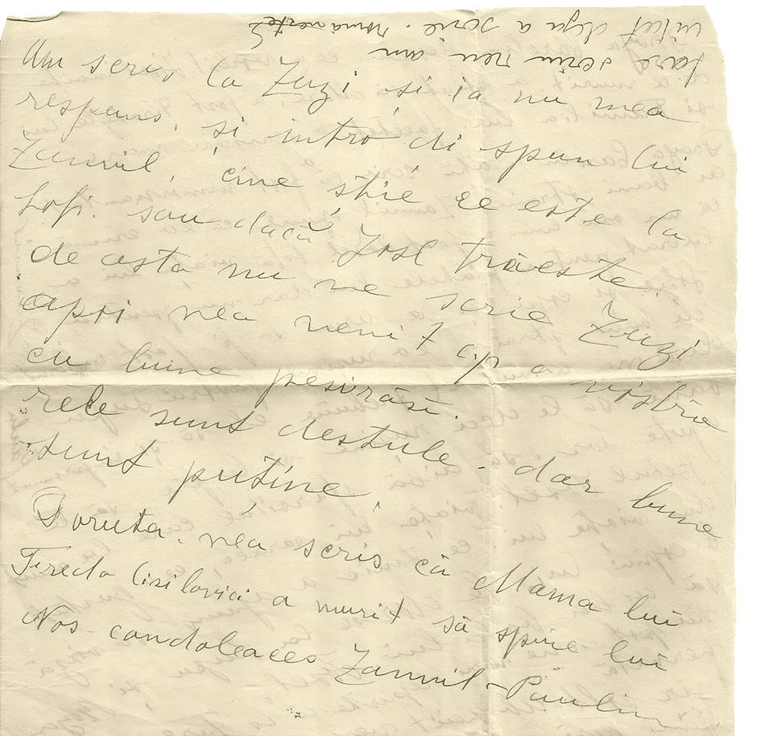
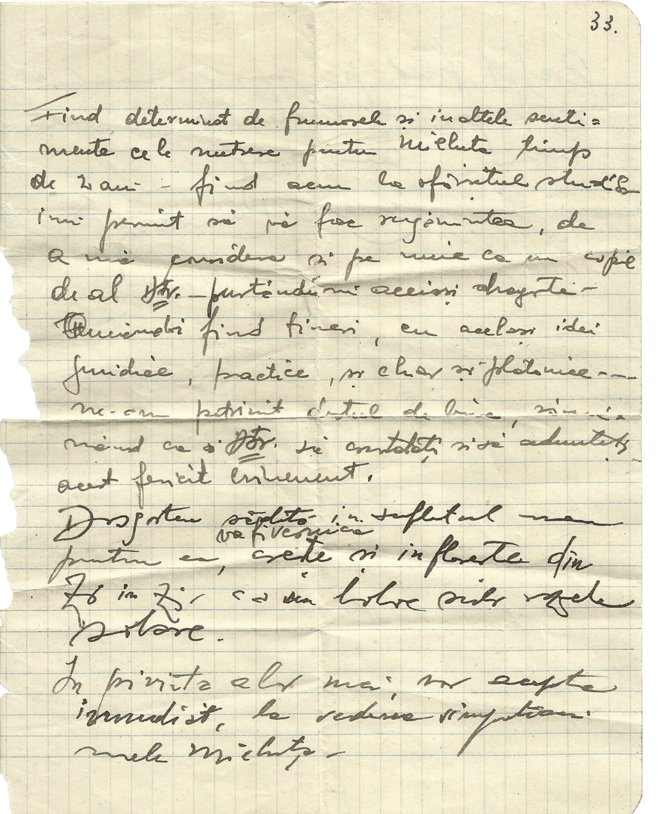

Français
Haïm et Peril avaient peut-être un petit jardin ouvrier près de Paris. C‘est ce que laisse supposer une photographie sur laquelle Peril est en train de jardiner. Sans enfants, Péril et Haïm prennent peut être quelques vacances, comme le montrent certaines photographies prises dans un paysage vallonné. Sur l’une des photographies, Haim s’appuie sur une canne. Cette photographie a certainement été prise dans les années 1930, il n’est donc pas si vieux. Mais il est de santé fragile depuis qu’il a été gazé lors de la Première Guerre mondiale. De nombreux soldats gazés pendant la guerre ont souffert ensuite de complications pulmonaires : pneumonie, bronchites chroniques, tuberculose…
Portugais
Haïm e Peril terão tido um pequeno jardim operário perto de Paris. É o que sugere uma fotografia em que Peril está a jardinar. Apesar de não terem filhos, Peril e Haïm podem ter gozado algumas férias, como o demonstram algumas fotografias tiradas numa paisagem montanhosa. Numa das fotografias, Haim está apoiado numa bengala. Esta fotografia foi provavelmente tirada nos anos 30, pelo que não é assim tão velho. Mas a sua saúde tem estado debilitada desde que foi gaseado na Primeira Guerra Mundial. Muitos soldados gaseados durante a guerra acabaram por sofrer de complicações pulmonares : pneumonia, bronquite crónica, tuberculose, etc.
Gabriel, avec l'aide de sa mère
Allemand
Haïm und Peril besaßen möglicherweise einen kleinen Schrebergarten in der Nähe von Paris. Darauf deutet ein Foto hin, auf dem Peril gärtnert. Peril und Haïm waren kinderlos. Sie machten vermutlich Urlaub, wie einige Fotos zeigen, die in einer hügeligen Landschaft aufgenommen wurden. Auf einem der Fotos stützt sich Haïm auf einen Stock. Dieses Foto wurde wahrscheinlich in den 1930er Jahren aufgenommen, also ist Haïm nicht so alt. Er ist jedoch gesundheitlich angeschlagen, seitdem er im Ersten Weltkrieg vergast wurde. Viele Soldaten, die im Krieg vergast wurden, litten später an Lungenkomplikationen : Lungenentzündungen, chronische Bronchitis und Tuberkulose.
Florian, avec l’aide de sa professeure d’histoire, Isabelle Plourde


 


